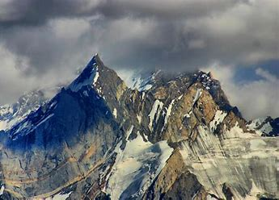
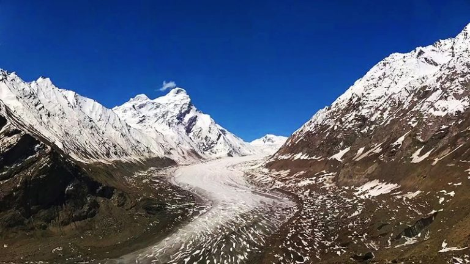

Zanskar valley is located in the Kargil district of the Union Territory of Ladakh at a distance of 463 km from Leh. The administrative headquarter of Zanskar, Padum, is situated at an elevation of 3669 m. The offbeat valley features a scenic landscape surrounded by Zanskar ranges giving it a gorgeous view. The Zanskar valley is undoubtedly one of the remotest places in the whole country, but at the same time, it has been one of the most beautiful ones as well. The famous attractions in Zanskar are worth a visit not only for the natural beauty but also because it offers various adventure activities popular among tourists. One can find some pretty fantastic places to visit in and around Zanskar. If you want to explore the pristine beauty of nature in the beautiful Zanskar valley of India, plan your trip now. Enjoy your tour to Indian Himalayas! And make sure you explore this incredible Indian paradise.
Zanskar Range

| Zanskar Range | |
|---|---|
|  | |
| Highest Peak | |
| Peak | Kamet |
| Length | 400 miles (640 km) |
| Elevation | 7,756 metres (25,446 ft) |
| Coordinates | 33°29′N 76°50′E |
| Geography | |
| Countries | India |
| Borders on | Ladakh, Indiamsa |